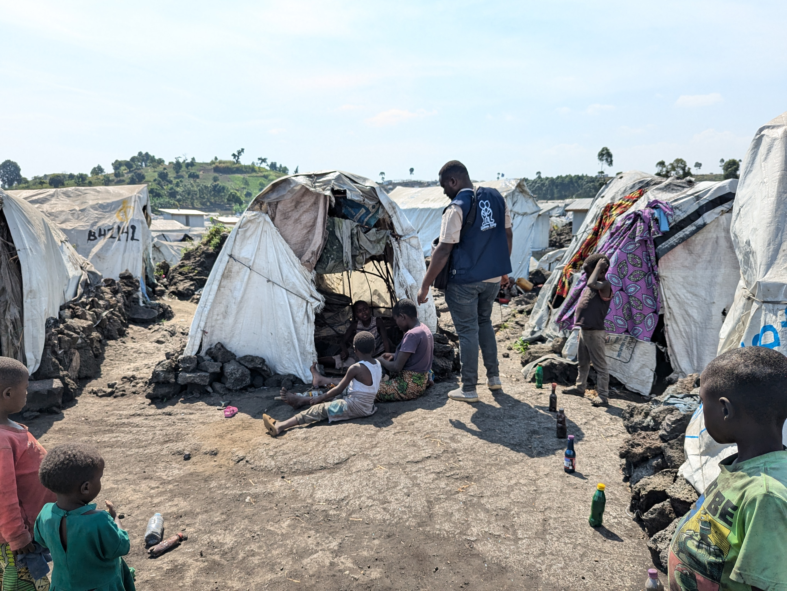

SHIELDING COMMUNITIES

In the shadow of relentless conflict and displacement, Goma, a city perched on the edge of eastern Democratic Republic of Congo (DRC), faces an unrelenting humanitarian crisis. As the M23 rebel group intensifies its advance in early 2025, violence has uprooted hundreds of thousands, swelling the population of overcrowded camps around the city. With over 700,000 displaced individuals already in North Kivu’s capital before this escalation, and thousands more fleeing daily, Wokovu Way NGO emerges as a critical shield for Goma’s most vulnerable—families, women, and youth left exposed to harsh weather and dire conditions. Dedicated solely to providing tents, Wokovu Way battles brutal elements and overwhelming demand to offer a fragile refuge in a region torn by war.
This mission is rooted in Goma, where the organization works tirelessly to distribute tents to camps like Lushagala and Bulengo, transforming flimsy barriers into symbols of hope. Amid the chaos of conflict, these shelters protect against rain, wind, and despair, standing as a testament to resilience in the face of adversity. Learn more about our beginnings.
TENT DISTRIBUTION

Wokovu Way NGO has made it its mission to shield displaced families by delivering tents to the sprawling camps encircling Goma. With the displaced population surpassing 800,000 by March 2025 due to the M23 offensive, the demand for shelter has reached a crisis point. These tents—constructed from durable tarpaulin and reinforced poles—serve as more than mere structures; they are lifelines, offering a fragile but essential barrier against the region’s punishing weather and a semblance of dignity for families torn from their homes. Wokovu Way prioritizes the most vulnerable, including single mothers like Amina, who arrived at Lushagala camp with her four children after their village was razed.
In sites like Lushagala, where over 71,000 people huddle in makeshift shelters, Wokovu Way has distributed more than 5,000 tents since January 2025. These shelters protect against the relentless rain and wind sweeping from Lake Kivu, preventing camps from becoming disease-ridden quagmires. For Amina, the tent provided by Wokovu Way became a sanctuary, allowing her children to sleep dry for the first time in weeks. Read Amina’s full story here.
HARSH WEATHER

Goma’s climate poses a formidable challenge to those without proper shelter, especially during the rainy season peaking in March 2025. Nestled near Lake Kivu and the Albertine Rift, the city endures heavy rainfall and fierce winds that transform displacement camps into muddy, flooded wastelands. For the over 800,000 displaced individuals, these conditions are brutal—torrential downpours soak belongings, turn dirt floors into swamps, and heighten the risk of waterborne diseases like cholera, which spiked in camps last year.
The volcanic terrain, scarred by Mount Nyiragongo’s eruptions, offers little stable ground, with rocky soil causing tent stakes to loosen and structures to collapse under pressure. High humidity and frigid nights further compound the hardship, leaving families vulnerable to pneumonia and other illnesses. Wokovu Way’s teams work around the clock to reinforce tents with additional tarps and sandbags, but the wear and tear from these elements demand constant repairs. Discover how we adapt to these conditions.
OVERCROWDING AND DEMAND

The crisis in Goma is exacerbated by severe overcrowding, a challenge that stretches Wokovu Way’s resources to the breaking point. Camps like Bulengo and Kanyaruchinya are bursting, with new arrivals fleeing M23’s advance—hundreds of thousands displaced in just weeks, according to the International Organization for Migration’s January 2025 report—piling into spaces already packed beyond capacity. This influx has overwhelmed the supply of tents, leaving Wokovu Way struggling to shield a population growing faster than aid can reach.
Supply chains are a bottleneck—roads into Goma, vital for delivering tents and materials, are frequently blocked by fighting or rendered impassable by mud and debris from heavy rains. The closure of Goma’s airport and restrictions on lake transport, noted in early 2025 updates, further hinder logistics. Distribution in these chaotic, overcrowded camps is a Herculean task, with families competing for the few available tents. Many, like elderly widow Fatuma, wait days in the rain, only to find stocks depleted, exposing them to the elements. Help us meet this demand.
PARTNERSHIP EFFORTS

Wokovu Way does not face this crisis alone, relying on strategic collaboration with local and international partners to amplify its impact. Local organizations like AGIR-DRC, deeply embedded in Goma’s camps, assist with tent distribution and coordination, leveraging their knowledge to identify the most desperate families. International partners, including the UN’s humanitarian agencies, provide logistical support when possible, helping source tents and navigate fractured supply routes despite ongoing conflict.
These partnerships have enabled Wokovu Way to distribute over 7,000 tents across North Kivu since the crisis escalated, a feat that would be impossible alone. However, funding shortages—only 43% of UNHCR’s $233 million plan for DRC was met by late 2023, a trend likely worsened in 2025—strain these alliances. Wokovu Way’s grassroots agility keeps it effective, but looted infrastructure and limited resources mean many tents arrive damaged or insufficient. The organization improvises with repairs, but the scale of need outpaces even this resilience. Learn about our partners.
ONGOING STRUGGLE
Wokovu Way’s relentless efforts in Goma embody a fierce commitment to shielding communities amid a spiraling crisis. By providing tents, they offer protection from the worst of the weather—rain-soaked nights, biting winds, and flooded camps—giving displaced families like Amina’s a fragile foothold. Yet, the challenges are immense: harsh environmental conditions erode tents quickly, overcrowding stretches supplies thin, and logistical nightmares hinder delivery. The M23 advance in March 2025, coupled with recent floods that submerged parts of Bulengo camp, adds urgency to an already desperate situation.
Collaboration with partners provides a lifeline, but with funding lagging and infrastructure crumbling, the fight is far from won. Wokovu Way aims to distribute 10,000 more tents by mid-2025, a goal that hinges on increased support. For now, each tent raised is a victory, a shield against the elements and a beacon of hope. In Goma, where mercy is scarce, Wokovu Way’s work is a race against time to protect the vulnerable. Join us in this critical mission.